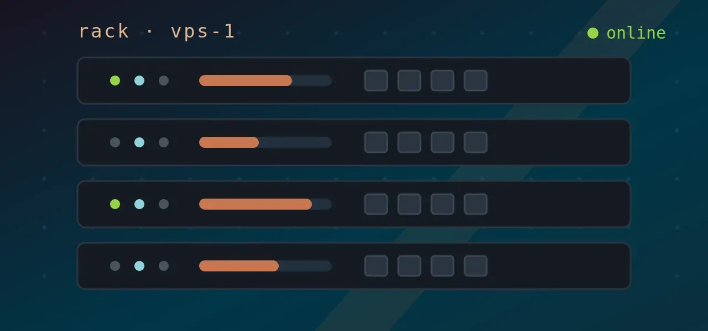
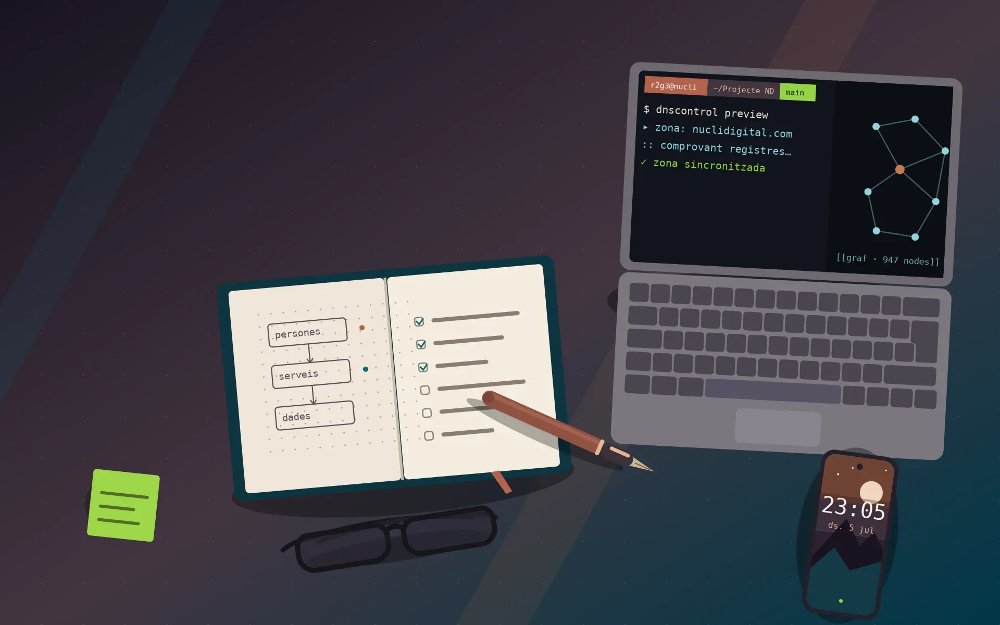
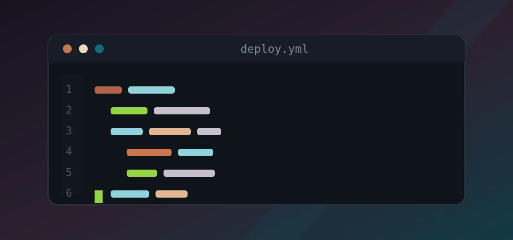
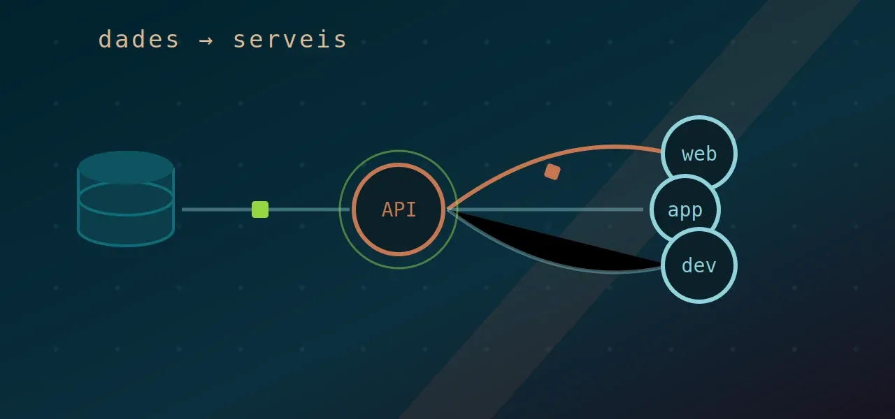
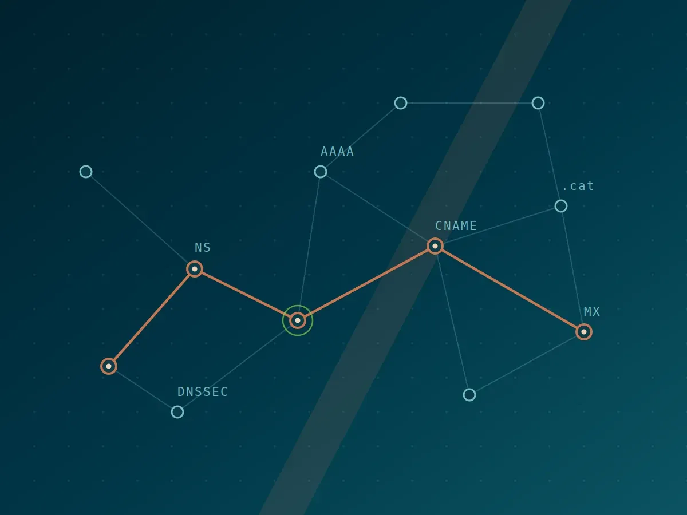
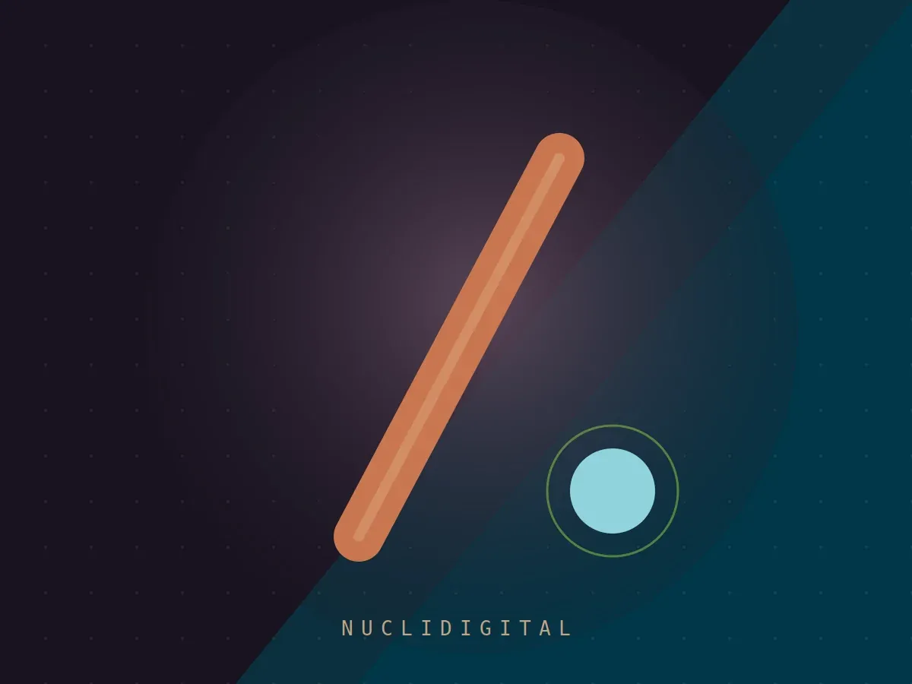
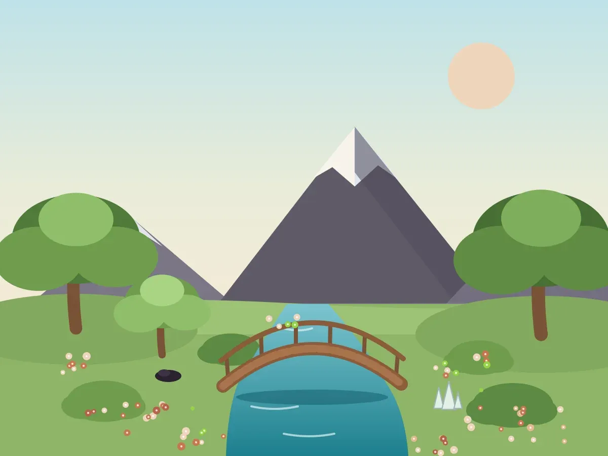
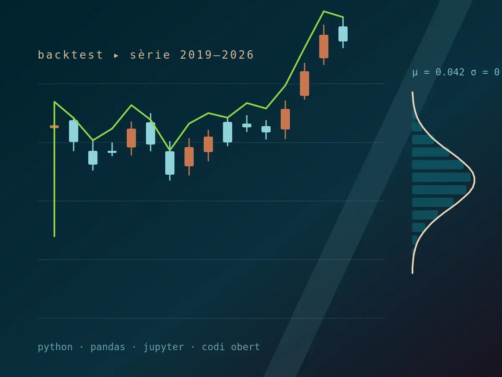
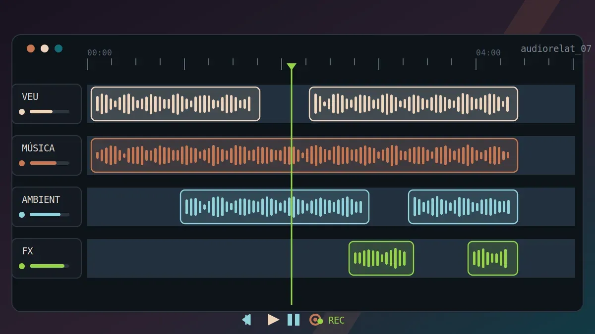
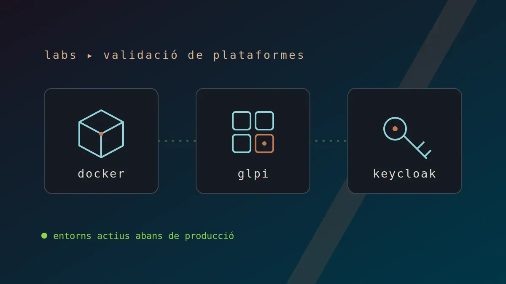

Base operativaINFRAESTRUCTURA
La capa tècnica que dona estabilitat, continuïtat i confiança a l’ecosistema digital.

Roger Gibaja
Un projecte personal per aprendre, guanyar criteri i convertir la tecnologia en valor real
Obert a col·laboracions open source01 / Presentació
Aquí construeixo, trenco i torno a muntar: infraestructura, software i serveis digitals esdevenen un banc de proves per pensar amb les mans i afinar el criteri.
A partir d’infraestructura, software i serveis digitals, construeixo un ecosistema propi per experimentar, connectar coneixement i moure’m pel món digital amb intenció, utilitat i sentit.

Base operativaLa capa tècnica que dona estabilitat, continuïtat i confiança a l’ecosistema digital.

Peces amb criteriTecnologia seleccionada amb intenció per configurar, automatitzar i donar forma a noves possibilitats.

Fluxos de valorDades, informació i serveis que connecten experiència, aprenentatge i utilitat compartida.
02 / Projectes
Projectes professionals que combinen governança TIC, infraestructura documentada i sobirania digital.

En desenvolupament
Operatiu
Actiu
Exploració03 / Iniciatives
Espais de treball continu que alimenten el garden: creació de contingut digital en àudio i validació de plataformes abans de comprometre producció.


04 / Sobre mi
Curiositat tècnica · Aprenentatge continu · Creativitat aplicada
El que em mou és entendre com funcionen les coses: obrir la caixa, connectar idees i aprendre construint, allà on la tecnologia es troba amb les persones.
Crec en el coneixement obert i en fer les coses amb mesura i sentit. Aquest jardí digital és el meu espai d'aprenentatge i creativitat.
Zona privada
Introdueix la contrasenya per accedir als taulers interns del laboratori.
Contrasenya incorrecta. Torna-ho a provar.
Gate lleuger del costat del client per mantenir els enllaços fora de la vista pública. Els taulers reals estan protegits pels seus propis sistemes d'autenticació.
Accés concedit